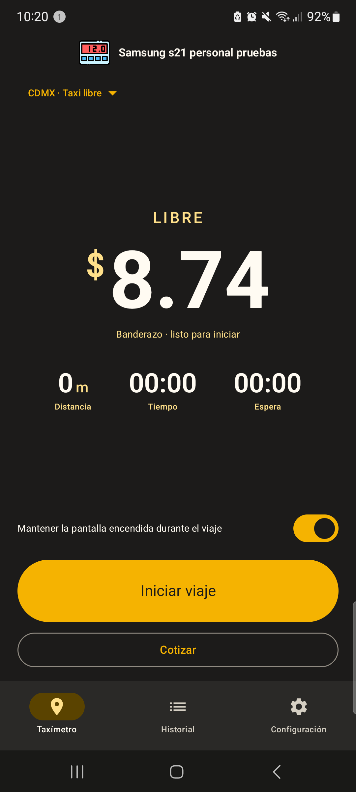

Diseñado especialmente para operadores de taxi. Olvídate de aplicaciones llenas de publicidad invasiva que consumen tus datos y se traban a medio viaje. Banderazo mide con satélites GPS en tiempo real con total transparencia para ti y tu pasajero.

Toca cada módulo para ver capturas reales tomadas directamente de la aplicación en funcionamiento.
Dígitos enormes de alta legibilidad, indicador satelital GPS en vivo, distancia recorrida y tiempo detenido.
Ajusta el tamaño del texto hasta un 160% para ver la tarifa sin forzar la vista y que tu pasajero viaje tranquilo.
Libre, Sitio y Radio Taxi CDMX precargadas. Crea tus propias tarifas por zona, foráneas, nocturnas o de sitio privado.
Calcula en segundos el costo exacto antes de arrancar. Ideal para convenios, presupuestos o viajes foráneos.
Genera un comprobante profesional con tu logo, placas, desglose y mapa para enviarlo al pasajero en un toque.
Monitorea tus ingresos diarios y semanales, kilómetros productivos, cobros promedio y desglose completo.
Exporta tu configuración o viajes completos. Protege tus tarifas con código PIN para evitar alteraciones.
Una herramienta de trabajo profesional frente a las aplicaciones genéricas llenas de publicidad.
| Característica | Banderazo Taxímetro | Apps Genéricas Gratuitas |
|---|---|---|
| Publicidad y comerciales | ✓ Cero anuncios. Pantalla 100% limpia para trabajar. | ✗ Videos con sonido y banners invasivos a mitad de viaje. |
| Conexión a Internet y datos móviles | ✓ 100% Satelital GPS offline. No gasta tus megas. | ✗ Requiere internet obligatorio para cargar publicidad. |
| Ergonomía visual y tamaño de texto | ✓ Ajustable hasta 160%. Lectura clara para chofer y cliente. | ✗ Tamaño fijo pequeño difícil de leer bajo el sol. |
| Edición y creación de tarifas | ✓ Oficiales CDMX + tarifas personalizadas ilimitadas. | ✗ Tarifas rígidas o bloqueadas sin poder ajustarlas. |
| Comprobante digital para el cliente | ✓ Ticket con tu logo e identidad listo para WhatsApp. | ✗ Sin comprobante o con marca de agua publicitaria. |
| Protección con PIN de seguridad | ✓ PIN para evitar cambios no autorizados en tarifas. | ✗ Cualquiera puede desconfigurar la aplicación. |
| Soporte técnico directo en español | ✓ Atención personalizada por WhatsApp y teléfono. | ✗ Desarrolladores extranjeros sin respuesta ni soporte. |
Herramientas pensadas por y para conductores profesionales.
Algoritmo calibrado para medir simultáneamente la distancia avanzada y el tiempo detenido en semáforos o tráfico pesado, con cálculo instantáneo por saltos de tarifa según el reglamento oficial.
Configura una clave de 4 dígitos para que sólo tú puedas editar tarifas o modificar parámetros clave del taxímetro.
Personaliza el nombre de tu sitio, base o unidad y sube tu propio logo para que aparezca en el encabezado de los comprobantes.
Cada viaje guarda hora de inicio, fin, tarifa aplicada, distancia exacta, tiempo detenido e importe final. Revisa tu jornada en cualquier momento y compártela si requieres una aclaración con el usuario.
Elige entre respaldo completo (viajes + configuración) o únicamente tus tarifas y ajustes para migrar fácilmente a otro teléfono.
Diseñado para operar jornadas completas de 12 horas continuas con mínimo calentamiento y eficiente gestión de pantalla.
Paleta oscura profunda para no encandilar tu vista durante la noche ni incomodar a los pasajeros en el habitáculo.
Prueba cómo calcula Banderazo en base a los parámetros oficiales de la CDMX.
Respuestas claras sobre la instalación, funcionamiento y licencias de Banderazo.
No. Banderazo funciona al 100% de manera satelital a través del chip GPS de tu teléfono Android. Puedes usarlo en modo avión o sin chip SIM y medirá la distancia y tiempo con exactitud total.
Sí. Además de incluir las tarifas oficiales de la CDMX (Libre, Sitio y Radio Taxi), Banderazo cuenta con un editor completo donde puedes crear tus propias tarifas: fijar el banderazo que desees, el costo por brinco, los metros por salto y los segundos de espera.
Porque es una herramienta de trabajo profesional. En ruta no puedes arriesgarte a que un video comercial con sonido tape la pantalla o distraiga tu conducción cuando un pasajero va a bordo.
En cualquier smartphone o tableta con sistema operativo Android 8.0 en adelante que cuente con sensor GPS integrado.
Muy fácil. Nos mandas un mensaje por WhatsApp con el código de tu teléfono y realizas una transferencia bancaria rápida. Te enviamos tu código de activación al instante sin trámites complicados.
Por supuesto. Banderazo incluye una función de respaldo que guarda tus tarifas e historial en un archivo para que puedas restaurarlo en tu nuevo dispositivo sin empezar de cero.